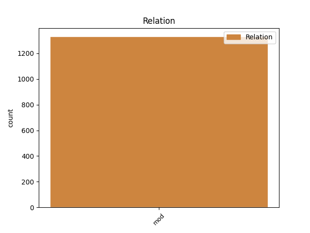
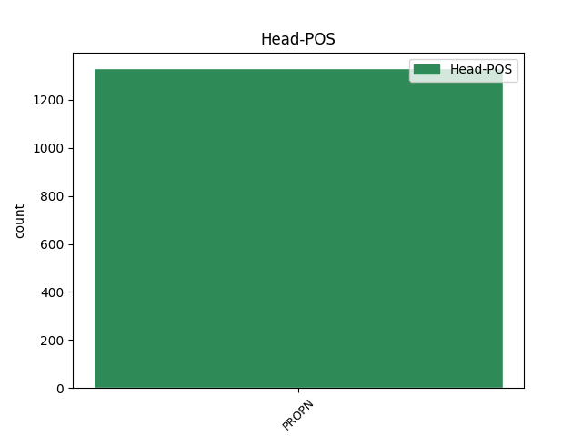
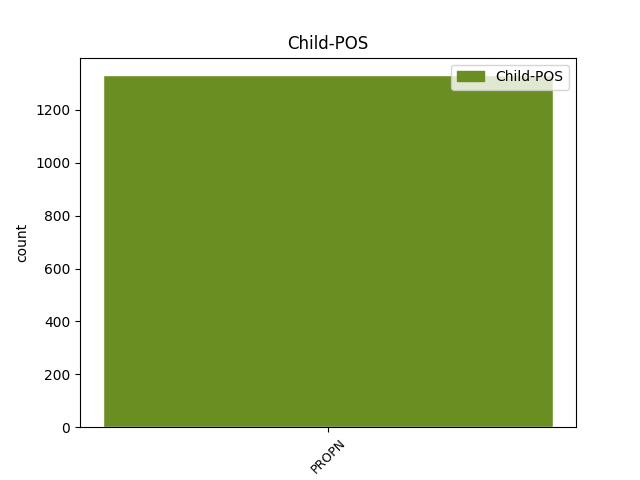

Distribution of features within this leaf



Agreement Rules sorted by frequency.
- When the dependent token is the modifer(mod) of the head token, and the head token is PROPN and the dependent token is PROPN.
1 पत्रिका _ _ _ _ 0 _ _ _
2 का _ _ _ _ 0 _ _ _
3 कहना _ _ _ _ 0 _ _ _
4 है _ _ _ _ 0 _ _ _
5 कि _ _ _ _ 0 _ _ _
6 अमेरिका _ _ _ _ 0 _ _ _
7 और _ _ _ _ 0 _ _ _
8 अंतर्राष्ट्रीय _ _ _ _ 0 _ _ _
9 परमाणु _ _ _ _ 0 _ _ _
10 ऊर्जा _ _ _ _ 0 _ _ _
11 एजेंसी एजेंसी PROPN NNP Case=Acc|Gender=Fem|Number=Sing|Person=3 0 _ _ _
12 ( _ _ _ _ 0 _ _ _
13 आईएईए आईएईए PROPN NNP Case=Acc|Gender=Fem|Number=Sing|Person=3 11 mod _ ChunkId=NP4|ChunkType=head|SpaceAfter=No|Tam=0|Translit=āīeīe|Vib=0
14 ) _ _ _ _ 0 _ _ _
15 के _ _ _ _ 0 _ _ _
16 जाँच _ _ _ _ 0 _ _ _
17 - _ _ _ _ 0 _ _ _
18 कर्ताओं _ _ _ _ 0 _ _ _
19 का _ _ _ _ 0 _ _ _
20 मानना _ _ _ _ 0 _ _ _
21 है _ _ _ _ 0 _ _ _
22 कि _ _ _ _ 0 _ _ _
23 खान _ _ _ _ 0 _ _ _
24 ने _ _ _ _ 0 _ _ _
25 सऊदी _ _ _ _ 0 _ _ _
26 अरब _ _ _ _ 0 _ _ _
27 , _ _ _ _ 0 _ _ _
28 मिस्र _ _ _ _ 0 _ _ _
29 और _ _ _ _ 0 _ _ _
30 सूडान _ _ _ _ 0 _ _ _
31 , _ _ _ _ 0 _ _ _
32 आइवरी _ _ _ _ 0 _ _ _
33 कोस्ट _ _ _ _ 0 _ _ _
34 और _ _ _ _ 0 _ _ _
35 नाइजीरिया _ _ _ _ 0 _ _ _
36 जैसे _ _ _ _ 0 _ _ _
37 अफ्रीकी _ _ _ _ 0 _ _ _
38 देशों _ _ _ _ 0 _ _ _
39 की _ _ _ _ 0 _ _ _
40 भी _ _ _ _ 0 _ _ _
41 यात्रा _ _ _ _ 0 _ _ _
42 की _ _ _ _ 0 _ _ _
43 । _ _ _ _ 0 _ _ _
Disagree Examples:
1 हाथी _ _ _ _ 0 _ _ _
2 महल _ _ _ _ 0 _ _ _
3 , _ _ _ _ 0 _ _ _
4 दरिया _ _ _ _ 0 _ _ _
5 खान _ _ _ _ 0 _ _ _
6 की _ _ _ _ 0 _ _ _
7 मजार _ _ _ _ 0 _ _ _
8 , _ _ _ _ 0 _ _ _
9 दाई _ _ _ _ 0 _ _ _
10 का _ _ _ _ 0 _ _ _
11 महल _ _ _ _ 0 _ _ _
12 , _ _ _ _ 0 _ _ _
13 दाई _ _ _ _ 0 _ _ _
14 की _ _ _ _ 0 _ _ _
15 छोटी _ _ _ _ 0 _ _ _
16 बहन बहन PROPN NNP Case=Acc|Gender=Fem|Number=Sing|Person=3 18 mod _ ChunkId=NP4|ChunkType=child|Tam=0|Translit=bahana|Vib=0
17 का _ _ _ _ 0 _ _ _
18 महल महल PROPN NNP Case=Nom|Gender=Masc|Number=Sing|Person=3 0 _ _ _
19 , _ _ _ _ 0 _ _ _
20 मलिक _ _ _ _ 0 _ _ _
21 मघत _ _ _ _ 0 _ _ _
22 की _ _ _ _ 0 _ _ _
23 मस्जिद _ _ _ _ 0 _ _ _
24 और _ _ _ _ 0 _ _ _
25 जाली _ _ _ _ 0 _ _ _
26 महल _ _ _ _ 0 _ _ _
27 भी _ _ _ _ 0 _ _ _
28 दर्शनीय _ _ _ _ 0 _ _ _
29 हैं _ _ _ _ 0 _ _ _
30 । _ _ _ _ 0 _ _ _
1 ओरलैंडो _ _ _ _ 0 _ _ _
2 जाने _ _ _ _ 0 _ _ _
3 के _ _ _ _ 0 _ _ _
4 लिए _ _ _ _ 0 _ _ _
5 जुलाई जुलाई PROPN NNP Case=Nom|Gender=Fem|Number=Sing|Person=3 7 mod _ ChunkId=NP2|ChunkType=child|Tam=0|Translit=julāī|Vib=0
6 - _ _ _ _ 0 _ _ _
7 अगस्त अगस्त PROPN NNP Case=Acc|Gender=Masc|Number=Sing|Person=3 0 _ _ _
8 का _ _ _ _ 0 _ _ _
9 मौसम _ _ _ _ 0 _ _ _
10 सबसे _ _ _ _ 0 _ _ _
11 अच्छा _ _ _ _ 0 _ _ _
12 है _ _ _ _ 0 _ _ _
13 । _ _ _ _ 0 _ _ _
1 दरअसल _ _ _ _ 0 _ _ _
2 वह _ _ _ _ 0 _ _ _
3 इस _ _ _ _ 0 _ _ _
4 फिल्म _ _ _ _ 0 _ _ _
5 को _ _ _ _ 0 _ _ _
6 सबसे _ _ _ _ 0 _ _ _
7 पहले _ _ _ _ 0 _ _ _
8 प्रधानमंत्री प्रधानमंत्री PROPN NNP Case=Nom|Gender=Masc|Number=Sing|Person=3 10 mod _ ChunkId=NP4|ChunkType=child|Tam=0|Translit=pradhānamaṁtrī|Vib=0
9 मनमोहन _ _ _ _ 0 _ _ _
10 सिंह सिंह PROPN NNP Case=Acc|Gender=Masc|Number=Sing|Person=3 0 _ _ _
11 को _ _ _ _ 0 _ _ _
12 दिखाना _ _ _ _ 0 _ _ _
13 चाहते _ _ _ _ 0 _ _ _
14 हैं _ _ _ _ 0 _ _ _
15 । _ _ _ _ 0 _ _ _
1 वैदिक _ _ _ _ 0 _ _ _
2 मंत्रोच्चार _ _ _ _ 0 _ _ _
3 के _ _ _ _ 0 _ _ _
4 बीच _ _ _ _ 0 _ _ _
5 आज _ _ _ _ 0 _ _ _
6 पूर्व _ _ _ _ 0 _ _ _
7 प्रधानमंत्री प्रधानमंत्री PROPN NNP Case=Nom|Gender=Masc|Number=Sing|Person=3 11 mod _ ChunkId=NP3|ChunkType=child|Tam=0|Translit=pradhānamaṁtrī|Vib=0
8 पी. _ _ _ _ 0 _ _ _
9 वी. _ _ _ _ 0 _ _ _
10 नरसिंह _ _ _ _ 0 _ _ _
11 राव राव PROPN NNP Case=Acc|Number=Sing|Person=3 0 _ _ _
12 की _ _ _ _ 0 _ _ _
13 यहां _ _ _ _ 0 _ _ _
14 हुसैन _ _ _ _ 0 _ _ _
15 सागर _ _ _ _ 0 _ _ _
16 झील _ _ _ _ 0 _ _ _
17 के _ _ _ _ 0 _ _ _
18 किनारे _ _ _ _ 0 _ _ _
19 पूरे _ _ _ _ 0 _ _ _
20 सैन्य _ _ _ _ 0 _ _ _
21 सम्मान _ _ _ _ 0 _ _ _
22 के _ _ _ _ 0 _ _ _
23 साथ _ _ _ _ 0 _ _ _
24 अंत्येष्टि _ _ _ _ 0 _ _ _
25 की _ _ _ _ 0 _ _ _
26 गई _ _ _ _ 0 _ _ _
27 । _ _ _ _ 0 _ _ _
1 नरसिंह _ _ _ _ 0 _ _ _
2 राव _ _ _ _ 0 _ _ _
3 का _ _ _ _ 0 _ _ _
4 बृहस्पतिवार _ _ _ _ 0 _ _ _
5 को _ _ _ _ 0 _ _ _
6 दिल्ली दिल्ली PROPN NNP Case=Nom|Gender=Fem|Number=Sing|Person=3 8 mod _ ChunkId=NP3|ChunkType=head|Tam=0|Translit=dillī|Vib=0
7 स्थित _ _ _ _ 0 _ _ _
8 एम्स एम्स PROPN NNP Case=Acc|Gender=Masc|Number=Sing|Person=3 0 _ _ _
9 में _ _ _ _ 0 _ _ _
10 निधन _ _ _ _ 0 _ _ _
11 हो _ _ _ _ 0 _ _ _
12 गया _ _ _ _ 0 _ _ _
13 था _ _ _ _ 0 _ _ _
14 । _ _ _ _ 0 _ _ _